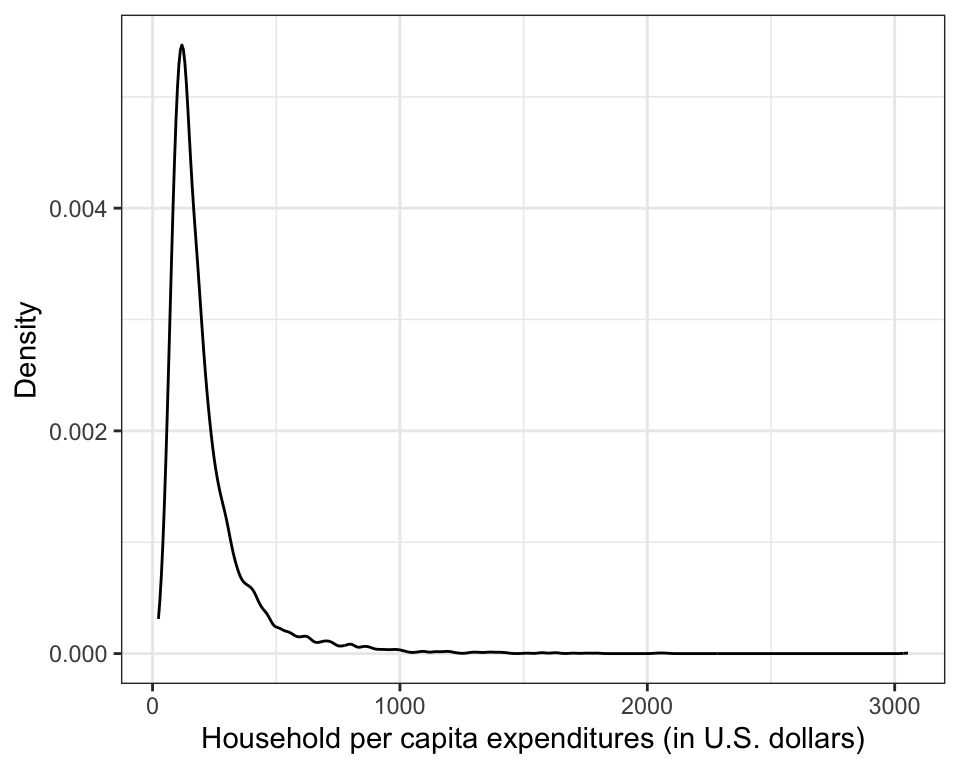
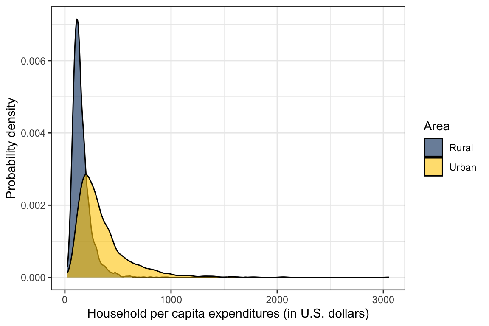
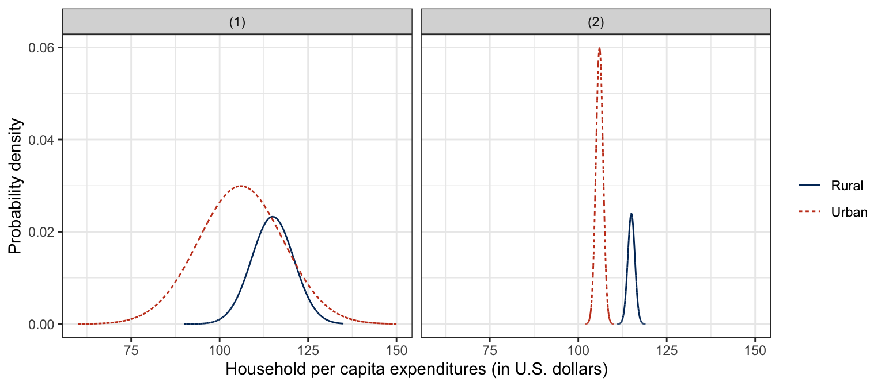

# Load libraries
library(e1071)
library(tidyverse)Exploration: Comparing Two Groups
Adapted from Zieffler et al. (2011)
FYI
This chapter assumes a working knowledge of {dplyr} and {ggplot2} functionality to work with and plot data.
In the chapter on kernel density estimation the Vietnam Living Standards Survey (VLSS) was introduced. The survey was designed to provide an up-to-date source of data on households to be used in public policy formation, to assess current living standards, and to evaluate the impact of public programs. In this chapter, we will address the following research question:
Are there differences in the annual household per capita expenditures between the rural and urban populations in Vietnam?
To address these research questions, we will use the vlss-per-capita.csv to explore and compare the household expenditures across different demographic variables in the sample data.
Loading Packages and Importing the Data
To begin, we will load three packages that we will use in this analysis.
The data contains the household per capita expenditures for 5,999 households along with two demographic variables.
# Import data
vlss = read_csv("https://raw.githubusercontent.com/zief0002/musings/master/data/vlss-per-capita.csv")
# View data
vlss# A tibble: 5,999 × 3
expend area region
<dbl> <chr> <dbl>
1 184. Rural 5
2 62.7 Rural 5
3 119. Rural 5
4 76.6 Rural 5
5 97.5 Rural 5
6 132. Rural 5
7 99.9 Rural 5
8 80.0 Rural 5
9 88.6 Rural 5
10 161. Rural 5
# ℹ 5,989 more rowsGraphically Summarizing the Marginal Distribution
Initially, the distribution of the per capita expenditures for all 5,999 households—ignoring whether they are urban or rural—is examined. The distribution ignoring the population area is known as the marginal distribution. The syntax to create a plot of the kernel density estimate (KDE) for the marginal distribution of the per capita expenditures is show below.

The plot of the marginal distribution shown in Figure 1 indicates that the per capita expenditures data is right skewed, as the majority of household per capita expenditures pile up at the low end, and taper off moving to the right. This suggests that many of the households in Vietnam have a low per capita expenditure (around $100 U.S.). It also shows some households that may be potential outliers in the marginal distribution. These are households with very high expenditures relative to the rest of the households in the sample.
Graphically Summarizing Conditional Distributions
Examining the marginal distribution is useful in an initial examination of the data, but it does not help in answering the research question about rural and urban differences. To help address the first research question, the distribution of per capita expenditures for each area must be examined separately. The distributions of per capita household expenditures for each area are called conditional distributions because they are defined conditional on area.
To graphically examine the conditional distributions, we will plot the KDE for the distribution of household per capita expenditures separately for the urban and rural households. There are many ways to do this using the {tidyverse} functionality. Below we will map the fill aesthetic to the area attribute in the dataframe. This will create the two KDEs in different colors in our plot. Because we are mapping an attribute in the data to an aesthetic, this is included inside the aes() function. The alpha=0.6 argument makes the density plots semi-transparent1 so that we can see both plots in the figure. The scale_fill_manual() layer changes the fill color used to shade in the density plots.

Figure 2 shows a single graph—or panel—with the conditional density curves superimposed and coded by line color. By having both conditional distributions in the same panel, this type of plot makes it psychologically easier for people to make comparisons. As can be seen in the plot, the urban curve is shifted to the right of the rural curve toward higher per capita household expenditures. In addition, the peak of the urban curve is lower than that of the rural curve, and both distributions are positively skewed.
Numerical Summaries of Data: Estimates of the Population Parameters
After graphically examining the data, it is desirable to obtain a more precise numerical summarization of the estimated population distribution. The numerical summaries can generally be split into two different types:
- Measures of location, or central tendency
- Measures of variability, or dispersion
Measures of location are single values that represent the measurement of a typical individual or unit in the distribution being studied. For example, in Figure 2, a typical household in the distribution might be defined as having a per capita expenditure at the dollar amount directly below the peak of the curve. Based on this, the typical urban household has a higher per capita expenditure than the typical rural household.
Measures of variability provide an indication of how different, or variable, the measurements in the distribution happen to be. For instance, Figure 2 also shows that the urban distribution spans a longer interval than the rural distribution, indicating urban household have more variation in their per capita expenditures than rural households. Researchers are often interested in the measures of location and variation in the population as they constitute relatively clear summaries of important aspects of distributions. The numerical summaries of the population distribution are called parameters. Parameters are estimated using sample data.
Measuring Central Tendency
The three most common measures of location are the mean, the median, and the mode. The mode describes a typical measurement in terms of the most common outcome or most frequently occurring score. In Figure 2, the mode of each distribution is the household expenditure value directly under the peak of the curve. A limitation in using the mode is that a distribution can have more than one. This indicates that the mode will not always have a unique value and, thus, cannot be recommended for general use.
In contrast to the mode, the median and mean are always unique values. The median is the middle-most score in a distribution. The median() function is used to find the median of the distribution. The best known and most frequently used measure of central tendency is the mean, or the average. The mean() function is used to find the mean of a distribution.
## Marginal mean and median household per capita expenditure
vlss |>
summarize(
M = mean(expend),
Med = median(expend)
)# A tibble: 1 × 2
M Med
<dbl> <dbl>
1 213. 160.The median household per capita expenditure is $160, and the mean household per capita expenditure is $213. In symmetric distributions, the mean and median can be equal or nearly so. However, in asymmetric distributions, the two can differ, sometimes drastically.
Conditional Means and Medians
The mean and median computed in the previous section summarize the marginal distribution, as area is ignored. Though the marginal estimates are useful, the goal is to compute the conditional estimates of a typical household per capita expenditure for each area. To do this we add a group_by() layer into our piping syntax prior to computing the summary values. Consider the following syntax:
## Condition mean and median household per capita expenditure
vlss |>
group_by(area) |>
summarize(
M = mean(expend),
Med = median(expend)
)# A tibble: 2 × 3
area M Med
<chr> <dbl> <dbl>
1 Rural 157. 135.
2 Urban 349. 279.The mean household per capita expenditure for the urban area is more than twice that for the rural area. This is consistent with Figure 2 that shows the urban distribution being right-shifted relative to the rural distribution. This suggests that the average household per capita expenditure differs for urban and rural areas in the sample.
Measuring Variation
When an analysis deals with at least two groups, as in the rural/urban comparisons, it is important to consider group differences in variability and well as location. Variability within the groups influences the evaluation of location differences. High within-group variability can be an overwhelming feature that can render location differences as irrelevant, or at least less relevant. On the other hand, low within-group variability can work to accentuate location differences.
Consider the examples in Figure 3. In both panels the mean difference between the distributions is the same. However, the large within-group variation in the rural distribution in the left-panel makes the interpretation of group differences less clear for these data than for the data shown in the right-panel. In fact, it can be argued that the most important feature is the fact that the urban distribution is almost entirely contained within the rural distributions. This means, for example, that though the rural mean is lower than the urban mean, there are several rural households that are higher than the urban mean, and some that are higher than any urban households.
In contrast, in the right-panel of Figure 3, there is essentially no overlap between the two distributions. This means that the mean difference also characterizes the difference between almost every pair of households from the two distributions. If we were to randomly select one rural and one urban household, the rural household would almost surely have a lower annual income. The same cannot be said of the overlapping distributions in the right-panel of Figure 3.

Two summary measures of variation—the standard deviation and variance—are based on the deviations of the data from the mean. The sd() and var() functions can be used to compute these quantities, respectively. The syntax below illustrates the use of the functions to find the standard deviation for both the marginal and conditional distributions of household per capita expenditures.
## SD and variance of the marginal distribution of household per capita expenditure
vlss |>
summarize(
SD = sd(expend),
Variance = var(expend)
)# A tibble: 1 × 2
SD Variance
<dbl> <dbl>
1 180. 32222.## SD and variance of the conditional distributions of household per capita expenditure
vlss |>
group_by(area) |>
summarize(
SD = sd(expend),
Variance = var(expend)
)# A tibble: 2 × 3
area SD Variance
<chr> <dbl> <dbl>
1 Rural 96.9 9385.
2 Urban 250. 62564.Based on these conditional summaries, the rural households show less variation than the urban households. This is consistent with Figure 2 that shows the urban distribution being wider relative to the rural distribution. The average household per capita expenditure is more homogeneous for rural than for urban households. There are some caveats regarding indexes of variation. Most notably, measures of variation are sensitive to asymmetry, and their values can be inflated by even a single extreme value. For this reason, the skewness of the distributions should be considered when comparing measures of variation computed on such distributions.
Another measure of variation that often gets reported in the educational and behavioral sciences, is the standard error of the mean. The idea underlying the standard error is that different samples drawn from the same population have different values of the sample mean. This is a consequence of random sampling and the fact that sample information is always incomplete relative to the population. The standard error of the mean is the standard deviation of all the possible sample means for a given sample size. As such, this measure offers an indication of the precision of the sample mean, when it is used as an estimate of the population mean. The smaller the standard error the greater the precision. The standard error for the mean is computed as
\[ \mathrm{SE}_{\bar{Y}}=\frac{\mathrm{SD}_Y}{\sqrt{n}}. \]
where \(\mathrm{SD}_Y\) is the standard deviation of the observed measurements on some variable \(Y\). The standard error of the mean is computed for both the urban and rural households in the syntax below. The standard error for the rural group is approximately four times smaller than that of the urban group (\(\frac{6.01}{1.48} \approx 4\)). This suggests that the sample mean for the rural households is a more precise estimate of the rural population mean than the sample urban mean is for the urban population. The use of the sample estimates and standard error for estimating population parameters is discussed further in Chapter 9.
vlss |>
group_by(area) |>
summarize(
SD = sd(expend),
N = n()
) |>
mutate(
SE = SD / sqrt(N)
)# A tibble: 2 × 4
area SD N SE
<chr> <dbl> <int> <dbl>
1 Rural 96.9 4269 1.48
2 Urban 250. 1730 6.01Measuring Skewness
Skewness is a numerical measure that helps summarize a distribution’s departure from symmetry about its mean. A completely symmetric distribution has a skewness value of zero.2 Positive values suggest a positively skewed (right-tailed) distribution with an asymmetric tail extending toward more positive values, whereas negative values suggest a negatively skewed (left-tailed) distribution with an asymmetric tail extending toward more negative values.
The {e1071} package3 provides a function called skewness(), which computes the skewness value for a sample distribution based on three common algorithms. This function is supplied with the argument type=2 to compute G1, a slightly modified version of skewness that is a better population estimate (e.g., Joanes & Gill, 1998). The syntax below shows the use of skewness() to find the G1 values for the conditional distributions.
## Skewness (G1) of the conditional distributions of household per capita expenditure
vlss |>
group_by(area) |>
summarize(
G1 = skewness(expend, type = 2)
)# A tibble: 2 × 2
area G1
<chr> <dbl>
1 Rural 4.28
2 Urban 2.73These values suggest that both the urban and rural distributions are positively skewed, but more so for the rural group. The following guidelines are offered as help in interpreting the skewness statistic. Like all guidelines these should be used with a healthy amount of skepticism. All statistics should be interpreted in terms of the types and purposes of the data analysis, as well as the substantive area of the research.
- If \(G_1=0\), the distribution is symmetric.
- If \(\left|G_1\right| < 1\), the skewness of the distribution is slight.4
- If \(1 < \left|G_1\right| < 2\), the the skewness of the distribution is moderate.
- If \(\left|G_1\right| >2\), the distribution is quite skewed.
The above guidelines indicate that both distributions in the example are severely positively skewed. Furthermore, the rural distribution is more asymmetric than the urban distribution. This is again consistent with Figure 2, which shows the rural distribution has a longer tail relative to its mean than the urban distribution. The distribution of rural households shows relatively less density for household per capita expenditures above the mean than below the mean. This asymmetry is even more evident for urban households.
Measuring Kurtosis
Kurtosis is often used as a numerical summarization of the “peakedness” of a distribution, referring to the relative concentration of scores in the center, tail, and shoulders. Normal distributions have a kurtosis value of zero and are called mesokurtic.5 Distributions that reflect a more peaked and heavy-tailed distribution than the normal distribution have positive kurtosis values, and are said to be leptokurtic. Distributions which are flatter and lighter-tailed than the normal distribution have negative kurtosis values and are said to be platykurtic. Dyson & Cantab (1943, p. 360) suggest an “amusing mnemonic”—which was attributed to Gossett (Student, 1927)—for the above terms:
Platykurtic curves, like the platypus, are squat with short tails. Leptokurtic curves are high with long tails, like the kangaroo—noted for “lepping”.
The left- and right-hand panels of Figure 4 depict distributions with different kurtosis values. The mesokurtic distribution is shown for a basis of comparison in both figures. The distributions in the left-hand panel show positive kurtosis, whereas the distributions in the right-hand panel show negative kurtosis.

The kurtosis() function provided in the {e1071} package can be used to compute the sample kurtosis value for a distribution based on three common algorithms. We use this function with the argument type=2 to compute G2, a slightly modified version of the kurtosis statistic that is a better population estimate of kurtosis (e.g., Joanes & Gill, 1998). The syntax below shows the use of kurtosis() to find the G2 values for the conditional distributions.
## Kurtosis (G2) of the conditional distributions of household per capita expenditure
vlss |>
group_by(area) |>
summarize(
G2 = kurtosis(expend, type = 2)
)# A tibble: 2 × 2
area G2
<chr> <dbl>
1 Rural 42.7
2 Urban 14.0The kurtosis statistics for the conditional distributions suggest that both distributions are severely leptokurtic indicating that these distributions are more peaked than a normal distribution. They also have more density in the tails of the distribution than we would expect to see in a normal distribution. One can see in Figure 2 that the rural distribution is even more peaked than the urban distribution.
While the kurtosis statistic is often examined and reported by educational and behavioral scientists who want to numerically describe their samples, it should be noted that “there seems to be no universal agreement about the meaning and interpretation of kurtosis” (Moors, 1986, p. 283). Most textbooks in the social sciences describe kurtosis in terms of peakedness and tail weight. Balanda & MacGillivray (1988, p. 116) define kurtosis as “the location- and scale free movement of probability mass from the shoulders of a distribution into its center and tails”. Other statisticians have suggested that it is a measure of the bimodality present in a distribution (e.g., Darlington, 1970; Finucan, 1964). Perhaps it is best defined by Mosteller & Tukey (1977), who suggest that like location, variation, and skewness, kurtosis should be viewed as a “vague concept” that can be formalized in a variety of ways.
Summarizing the Findings
The APA manual (American Psychological Association, 2019) provides suggestions for presenting descriptive statistics for groups of individuals. The information should be presented in the text when there are three or fewer groups and in a table when there are more than three groups. While this number is not set in stone, we want to present results in a manner that will facilitate understanding. Typically we report measures of location, variation, and sample size for each group, at the very least. We present the results of our data analysis below.
Empirical evidence on the process of urbanization has shown increased economic segregation among urban and rural households, as well as increased spatial differentiation of land uses (e.g., Leaf, 2002). The Socialist Republic of Vietnam, for the last decade, has experienced an industrialization characterized by economic growth and urbanization.
Statistical analysis shows that the typical household per capita expenditure is higher for urban households (\(M=\$349\), \(\mathrm{SE}=\$6\)) than for rural households (\(M=\$157\), \(\mathrm{SE}=\$1\)). The distribution for urban households (\(\mathrm{SD}=\$250\)) also shows more variation than the distribution for rural households (\(\mathrm{SD}=\$97\)) indicating that rural areas tend to be more homogeneous in their household per capita expenditures. This evidence is further strengthened by the difference in asymmetry and heavy-tailedness in the urban (\(G1=2.73\), \(G2=42.66\)) and rural (\(G1=4.28\), \(G2=14.03\)) distributions.
In contrast to their urban counterparts, the economic stimulation in rural areas of Vietnam seems not to have been as dynamic. The typical household for rural areas is only $15 U.S. above the poverty line. Furthermore, except for a rather small number of wealthier rural households, the majority of rural households show little variation in their household per capita expenditures. This shared level of poverty could be due to the fact that a substantial share of the populace living in rural areas of Vietnam are now unemployed or underemployed.
It is worth noting, that the poverty line—established in 1998 by the General Statistical Office at $119 U.S. (General Statistical Office, 2001)—is close to the mode of the rural expenditure per capita distribution, which could indicate that a small increase in household expenditure per capita is enough to shift many of the rural households to a position above the poverty line. This is one likely explanation for recent dramatic reductions in poverty rates in Vietnam. As the poverty line moves higher, further reductions in poverty rates are likely to be smaller in magnitude.
References
American Psychological Association. (2019). Publication manual of the American Psychological Association (7th ed.). Author.
Balanda, K. P., & MacGillivray, H. L. (1988). Kurtosis: A critical review. The American Statistician, 42(2), 111–119.
Darlington, R. B. (1970). Is kurtosis really “peakedness?” The American Statistician, 24(2), 19–22.
Dyson, F. J., & Cantab, B. A. (1943). A note on kurtosis. Journal of the Royal Statistical Society, 106(4), 360–361.
Finucan, H. M. (1964). A note on kurtosis. Journal of the Royal Statistical Society. Series B (Methodological), 26(1), 111–112.
General Statistical Office. (2001). Statistical yearbook. Statistical Publishing House.
Joanes, D. N., & Gill, C. A. (1998). Comparing measures of sample skewness and kurtosis. The Statistician, 47(Part 1), 183–189.
Leaf, M. (2002). A tale of two villages: Globalization and peri-urban change in china and vietnam. Cities, 19(1), 23–31.
Moors, J. J. A. (1986). The meaning of kurtosis: Darlington reexamined. The American Statistician, 40(4), 283–284.
Mosteller, F., & Tukey, J. W. (1977). Data analysis and regression. Addison-Wesley.
Student. (1927). Errors of routine analysis. Biometrika, 19(1/2), 151–164.
Zieffler, A. S., Harring, J. R., & Long, J. D. (2011). Comparing groups: Randomization and bootstrap methods using R. Wiley.
Any value from 0–1 can be used, where
alpha=0is fully transparent andalpha=1is fully opaque.↩︎Technically this is only true for an index of skewness that has been “corrected” or “standardized” so that the normal distribution has a skewness of zero. Skewness indices need not be zero for a normal distribution in general.↩︎
An alternative package is
{moments}.↩︎\(\left|G_1\right|\) indicates the absolute value of \(G1\) (cut off the sign).↩︎
Again, technically this is only true for indices of kurtosis that have been “corrected” so that a normal distribution has a kurtosis of zero.↩︎